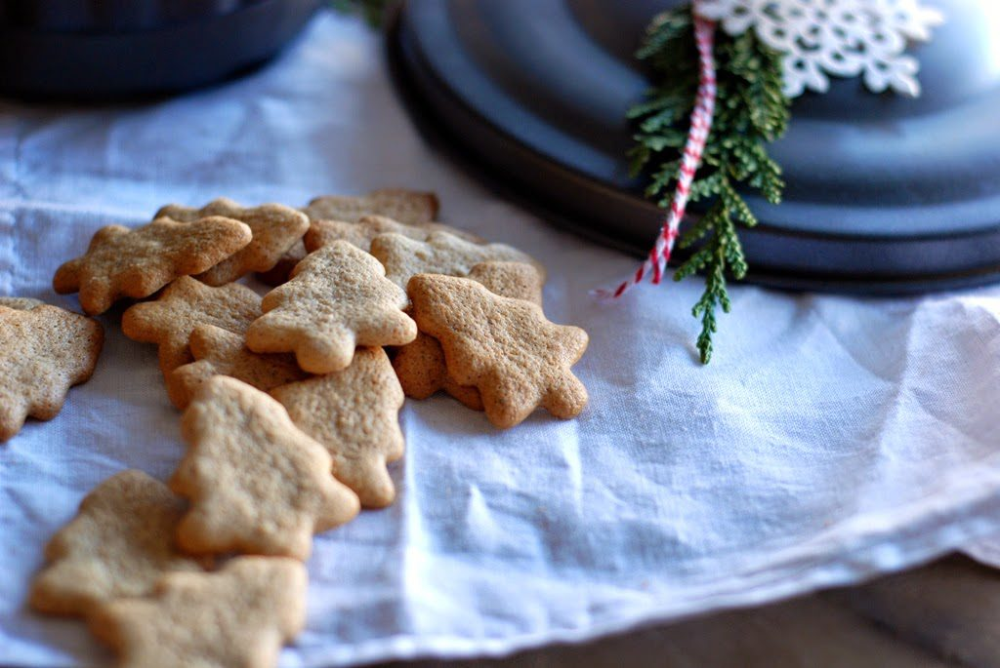

WELCOME TO ODIN RECIPES
Norwegian Pepperkaker

DESCRIPTION
Norwegian Pepperkaker is always so crunchy and has a bit of spicy heat to them. The perfect Christmas Cookies! The flavour lasts as long as the cookie.
COURSE: DESSERT
CUISINE: AMERICAN
COOK TIME: 30 mins
SERVES: 36 COOKIES
INGREDIENTS
- 1/2 cup dark corn syrup or golden syrup
- 1/2 cup butter 1 stick
- 1 1/2 teaspoons vinegar
- 1 egg
- 2 1/4 cups flour
- 1/2 teaspoon soda
- 1/4 teaspoon fresh ground pepper
- 1/2 teaspoon ginger
- 1/2 teaspoons cloves
- 1/2 teaspoon cinnamon
INSTRUCTIONS
- In a small saucepan add sugar, corn syrup, butter and vinegar to a simmer. Remove from heat and pour into a large mixing bowl. Set aside to cool for 5-10 minutes.
- Mix in egg. Sift together the flour, soda, pepper, ginger, cloves and cinnamon. Cover and refrigerate for several hours or overnight.
- Once the dough has chilled, roll the dough very thin on a floured surface. Cut into any desired shapes. Bake at 350℉ on a parchment-lined baking sheet for 7-8 minutes. Remove cookies from the baking sheet immediately and allow to cool. Store in airtight tins.
Back to top